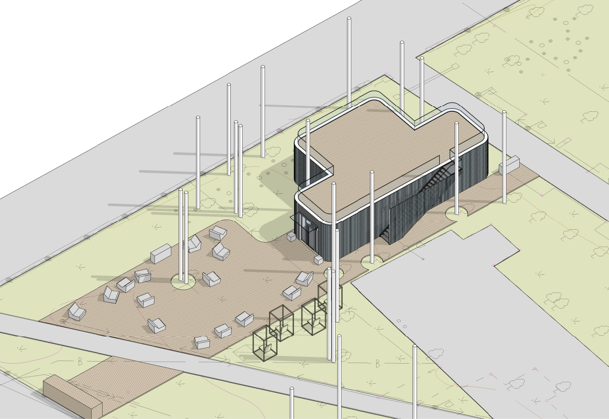

Ротари Клуб
Эко-парк в Ульяновске
Новости
1. Установить контейнеры для перерабатываемых отходов в парках или общественных пространствах.
2. Изготовить и установить мебель, на 98% состоящую из переработанного пластика.
3. Создать интерактивную экспозицию для популяризации экологичного образа жизни.
4. Проводить эколого-просветительские мероприятия на постоянной основе.
5. Установить экопункты для раздельного сбора отходов.
6. Проводить периодические акции по приему вторсырья для населения.
В рамках экопроекта мы планируем:
О нас
Проект реализует Арсений Куряев - архитектор, волонтер, член Ротаракта, экоактивист, житель Ульяновска.
В его портфолио входят социально-значимые архитектурные экопроекты для региона и страны.
- Среди них:
- 1. Разработка и постройка глэмпинга «Холмы»
- 2. Разработка дизайн-концепции для отдыха на Пальцинском острове
- 3. Разработка экологических модульных домов, производство с 2014 года.
- 4. Разработка дизайн-концепции для арт-пространства «Сквозняк» в 2015 г.
- 5. Победитель II Премии в номинации «Лучшее эскизное решение
“Центра водных видов спорта”» на Архитектурном фестивале «Эко-Берег 2021», 2021.
О проекте
Экоцентр – это современное городское пространство, сочетающее в себе последние тенденции общественных центров:полезность, интерактивность, функциональность, эмоциональность и доступность подачи информации – все, чтобы
заинтересовать самую широкую аудиторию и способствовать формированию нового и экологичного общества
Контейнеры для раздельного сбора
Демонстрация сортировки
Возобновляемые источники энергии
Зона отдыха
Общественное пространство
Интерактивные инсталляции
Лекторий
Коворкинг
Вторичное использование
Переработка
-
Площадка для сбора мусора:
- Благоустройство:
- Здание:
3D модель эко - парка
